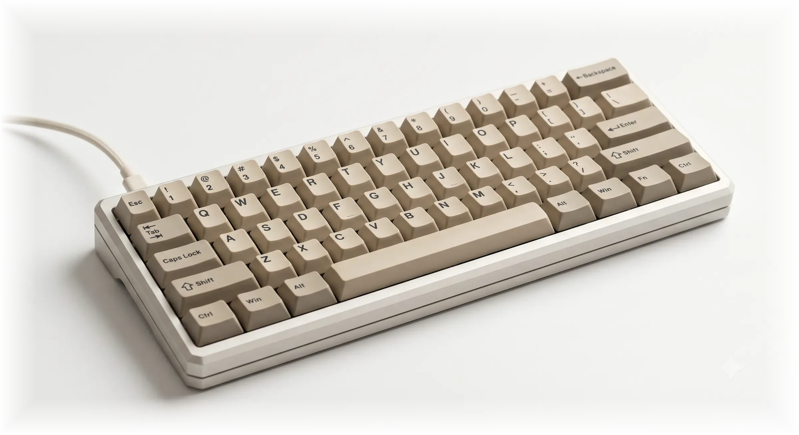
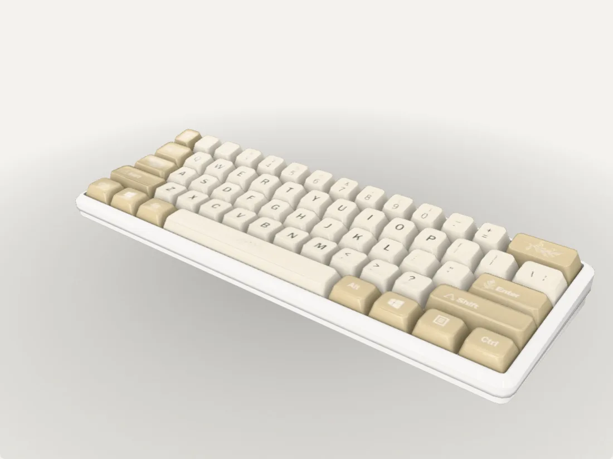
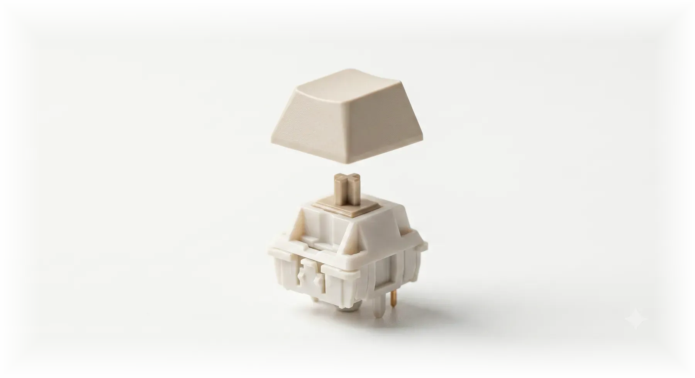
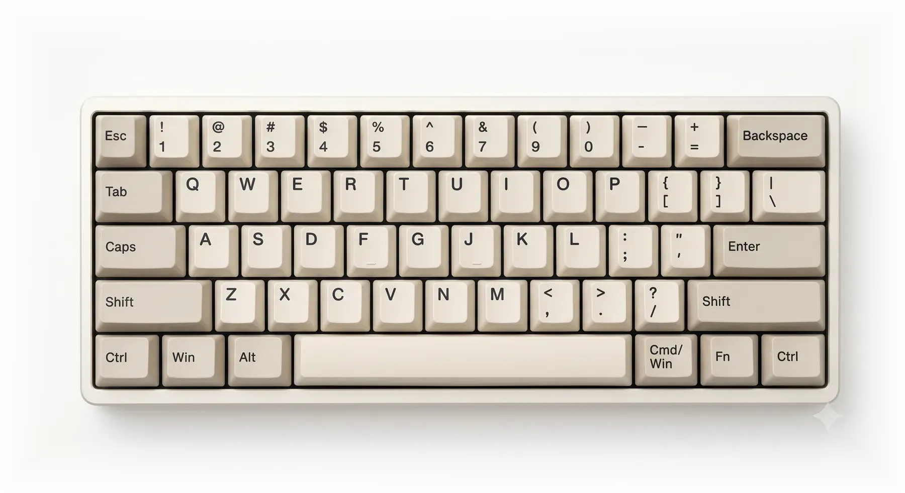

Sixty keys.
Nothing spare.
CARTA 60
Beige PBT on machined off-white aluminium.

Every part
accounted for.
Scroll to assemble
Turn it
over.
No renders here. This one is the real thing, running in your browser.
Drag to rotate, scroll/pinch to zoom


Tactile,
not loud.
Factory-lubed stems on a gasket-mounted plate. No ping, no hollow.

Legends that
outlive the board.
Dye-sublimated PBT, 1.5 mm walls. Nothing printed on, nothing to wear off.
One block
of aluminium.
Cut from 6063 billet, bead-blasted, anodised to a flat off-white.
Be first
in line.
The first run is small. Leave your details and we'll come to you before it opens.
Replies within 24 hours
Thanks — we'll be in touch.
We typically respond within 24 hours. Nothing else lands in your inbox.